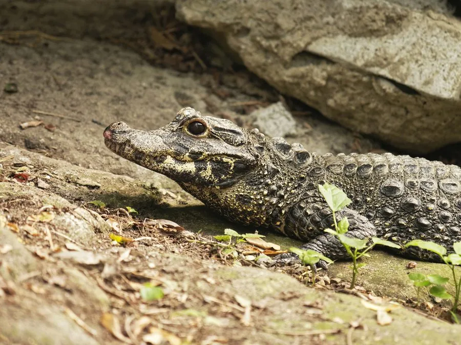

爬行动物 · 动物界
非洲侏儒鳄 Osteolaemus tetraspis

非洲雨林湿地的迷你鳄类，成年体长通常不足 2 米，背部覆坚硬骨板，夜间在溪流与沼泽中捕食蟹类和鱼类。
- 分类
- 门脊索动物门纲爬行纲目鳄目科鳄科属侏儒鳄属
- 栖息环境
- 西非与中非热带雨林的溪流、沼泽、湿地与红树林，常藏在岸边洞穴中
- 地理分布
- 非洲西部和中部，从塞内加尔至刚果盆地及安哥拉北部
- 保护级别
- IUCN 易危（VU）；CITES 附录 I
物种志
非洲侏儒鳄体长 1.5–1.9 m，个别个体可达 2.2 m，体重 30–80 kg，是现存体型最小的鳄类之一。体色深褐至近黑，颈部、背部和尾部覆盖厚重的骨质鳞甲，吻部较短，眼睛较大，四肢粗壮，尾侧扁。
它们分布于西非和中非的热带雨林，栖息于森林溪流、沼泽、湿地与红树林，常在岸边挖掘洞穴或利用树根下的空隙藏身。非洲侏儒鳄多在夜间活动，食物包括蟹、虾、鱼、蛙、蜗牛和小型脊椎动物，行动比大型鳄类更灵活。繁殖期与雨季相关，雌鳄用植物堆筑巢，每窝产卵约 10–20 枚，孵化约 85–105 天，幼鳄由雌鳄照料。由于雨林砍伐、丛林肉猎捕和栖息地破碎化，其种群受到威胁，被列为易危物种。
形态与习性
- 食性蟹、虾、鱼、蛙、蜗牛及小型脊椎动物
- 体长1.5–1.9 m，最大约 2.2 m
- 体重30–80 kg
- 繁殖每窝 10–20 枚，孵化 85–105 天
- 寿命约 40–50 年
- 特征颈背覆盖厚重骨质鳞甲
趣味知识
- 非洲侏儒鳄是现存最小的鳄类之一，成年个体通常不到 2 m。
- 它们常在河岸挖洞藏身，雨季水位上涨时会迁移到新的水域。
- 与凶名在外的大型鳄不同，侏儒鳄性情相对温和，主要捕食蟹和鱼。